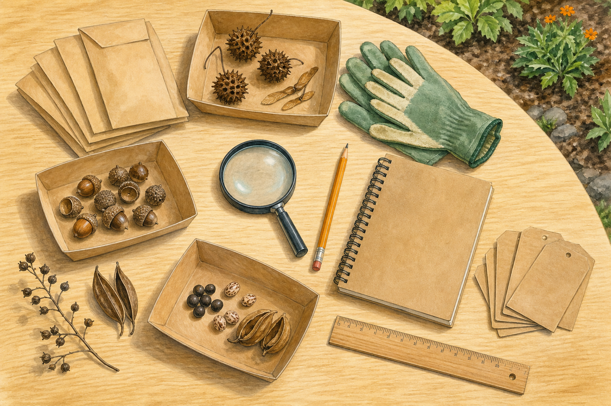

翅與毛：乘風
黑板樹種子有毛、木棉種子伴隨棉毛、昭和草瘦果有冠毛。觀察「輕、薄、面積大」。
SEED DETECTIVE
你撿到的「種子」可能還包在果實裡。先觀察外層、開裂方式與散播構造，再決定是否需要打開；未知材料不要直接剝開。

ONLY FALLEN & PERMITTED
採集不是把看見的都帶走。每種只取少量、保留大部分給植物更新與動物取食，並讓每份材料有來源可追查。
FRUIT OR SEED?
果實由花的子房等構造發育，裡面通常包著種子。像楓香刺球、木麻黃毬果狀果序與臺灣欒樹膨大蒴果，都不是單顆種子。
黑板樹種子有毛、木棉種子伴隨棉毛、昭和草瘦果有冠毛。觀察「輕、薄、面積大」。
大花咸豐草瘦果末端倒鉤，會黏衣物或動物毛；不刻意帶離校園。
榕樹、月橘等果實會吸引動物。人不能因鳥會吃就判定自己也能吃。
鳳凰木、羊蹄甲等豆科植物有莢果；外形、厚薄與開裂方式各不相同。
臺灣欒樹、矮牽牛、車前草等都有蒴果，但大小與裂法不同。
酢漿草與鳳仙花果實成熟會把種子彈出；由教師準備並保持距離觀察。
牛筋草、馬唐等禾本科的「種子」外觀其實是果皮與種皮緊貼的小果。
樟樹、杜英等肉質果內有硬核；不敲碎、不試吃，以外形紀錄為主。
FIELD PROTOCOL
這是課堂少量觀察流程，不是種原庫保存方法。肉質果與未知種子不適合由學生自行處理。
暫定植物名：＿＿＿＿＿＿ 採集日期：＿＿＿＿＿＿ 校園位置：＿＿＿＿＿＿ 採集者：＿＿＿＿＿＿
| 外層是果實嗎？ | 大小與形狀 | 表面與附屬構造 | 推測散播方式 | 還需要哪項證據？ |
|---|---|---|---|---|